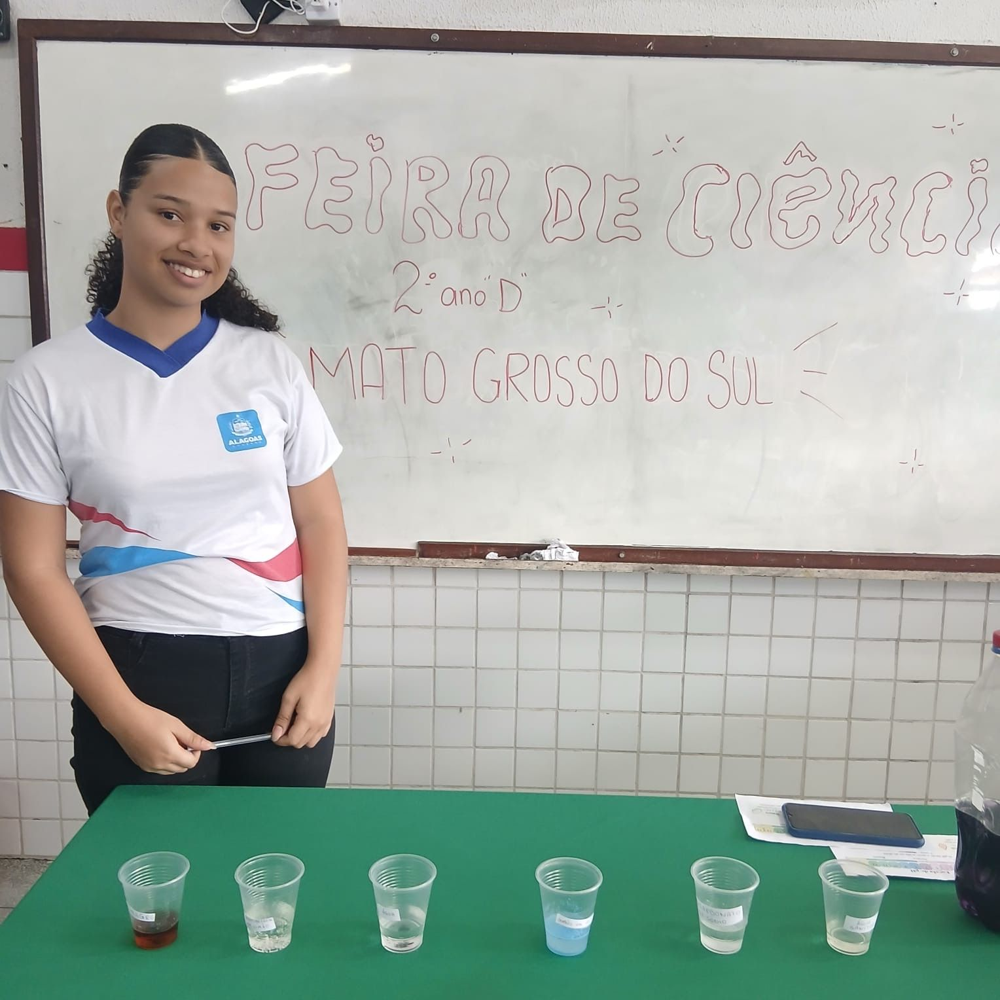
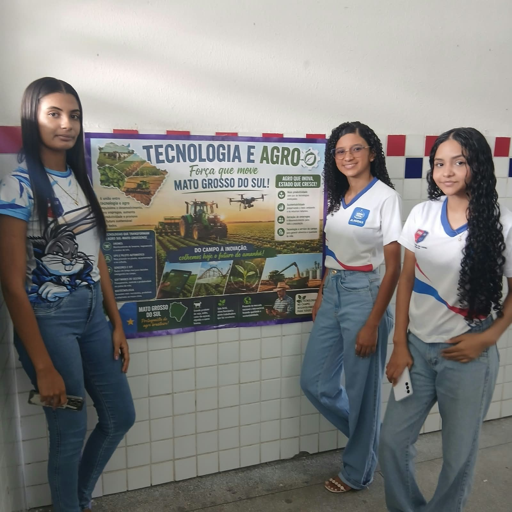

Experimento
Lima Castro Projeto
PIBIC Jr
Feira de Ciências 2026
Na Feira de Ciências 2026, a turma representou o estado de Mato Grosso do Sul e apresentou o experimento do medidor de pH com repolho roxo, além de cartazes sobre a culinária do estado (“Sabores de Mato Grosso do Sul”) e sobre tecnologia e agro (“Tecnologia e Agro: força que move Mato Grosso do Sul”).

Experimento

Fotos
Toque em uma foto para ver em tamanho maior.